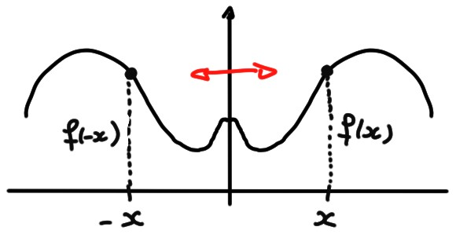

6.3 Parité
Une autre propriété qu'une fonction peut posséder et par rapport à son comportement vis-à-vis de la transformation \(x\mapsto -x\).
- \(f\) est dite paire si \(f(-x)=f(x)\) pour tout \(x\in D\).
- \(f\) est dite impaire si \(f(-x)=-f(x)\) pour tout \(x\in D\).
Ces propriétés peuvent s'exprimer comme une propriété géométrique satisfaite par le graphe de la fonction.
- Le graphe d'une fonction paire est
invariant sous une réflexion par rapport à l'axe \(Oy\).
En effet, si le point \((x,y)=(x,f(x))\) appartient au graphe, alors le
point \((-x,f(-x))=(-x,f(x))=(-x,y)\) appartient aussi au graphe:
 -
Ensuite, le graphe d'une fonction impaire est
invariant sous une rotation de \(180^o\) autour de l'origine.
En effet, si \((x,y)=(x,f(y))\) appartient au
graphe, alors le point \((-x,f(-x))=(-x,-f(x))=(-x,-y)=-(x,y)\)
appartient aussi graphe:

- paire si \(p\) est pair,
- impaire si \(p\) est impair.
Pour montrer qu'une fonction n'est pas paire (resp. pas impaire), il suffit de trouver un point \(x_*\) de son domaine où \(f(-x_*)\neq f(x_*)\) (resp. \(f(-x_*)\neq -f(x_3)\)).
Une fonction, en général, n'a pas de raison d'être paire ou impaire; pourtant toute fonction contient contient un peu d'une fonction paire, et un peu d'une fonction impaire:
Cherchons à écrire \(f(x)=p(x)+i(x)\), où \(p(x)\) est une fonction paire et \(i(x)\) est impaire. On doit donc avoir \[f(-x)=p(-x)+i(-x)=p(x)-i(x)\,,\] et donc \(i(x)\) et \(p(x)\) doivent satisfaire \[\begin{aligned} f(x)&=p(x)+i(x)\\ f(-x)&=p(x)-i(x)\,. \end{aligned}\] Ce petit système linéaire se résout facilement. Sa solution est unique, et donnée par \[ p(x)=\frac{f(x)+f(-x)}{2}\,,\qquad i(x)=\frac{f(x)-f(-x)}{2}\,.\]
- [ ] Il existe \(a>0\) tel que \(D=[-a,a]\) ou \(D=]-a,a[\).
- [ ] \(f\) est soit paire, soit impaire.
- [ ] Si \(f\) n'est pas paire, alors \(f(-x)\neq f(x)\) pour tout \(x\in D\).
- [ ] Si \(f\) n'est pas impaire, alors \(f(-x)\neq -f(x)\) pour tout \(x\in D\).
- [ ] Si \(f\) est impaire, alors \(f(0)=0\).
- [ ] Si \(f\) est paire, alors \(f^2\) est aussi paire.
- [ ] Si \(f\) est impaire, alors \(f^2\) est aussi impaire.
- [ ] \(f\) est en même temps paire et impaire si et seulement si \(f\) est identiquement nulle sur \(D\).